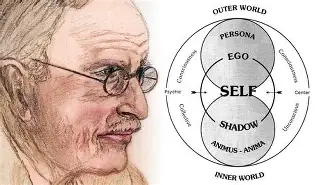
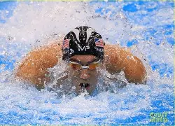

My Family and Friends
I live in a lively house with a loving, thoughtful mother and an almost father like stepdad who I get along greatly with and, have deep enthralling conversations with. Billy the man him self has a saint of a mother and the funniest extended family I've ever heard of. Then there is my amazing father Who I confide all my troubles in and who I will always come back to even hopefully when I finally get out of the house. I also have a brother who gives me any time of day when I want to talk to him and always sets up plans for us to do brotherly things together. Then there is my little sister who I've never let down and who I know will one day will be whatever she likes to be. although I do have a dog, I don't see them as anymore than animals so I won't talk about her. Who I will talk about are my dear grand parents on my mothers side Mike and teresa they nearly come to everyone of my sporting events. I really could't ask for a better set of grandparents I feel so close to them. I have had many close friends in my life and all of them I have told myself that I feel like I've really goten to know these people and the ins and outs of each of there personalities. My most favorite thing about the way I talk to My dear friends is that I don't need to hide anything about myself and tell them what ever comes to my mind. I'm just so happy to have friends that want to talk to me inside and outside of school because they are interested in what I have to say. ,god it's hard to lie this much. Satire about your family holly cliche grown up Elias.

this picture says so muchMy hobbies
To start off my grandiose things I do in my down time as anyone would guess I am a very vocial person. That is Usually because no one has anything better to say and with the confidance like I have. The entire world is my oyster and of course I indulge in my speaking habits by reciting my autobiography for all to hear outside of the local library. My next adventure I partake in from time to time is adding a cateloge of high edge videos to my youtube channel (@FlametopEli) just in case anyone wants to check it out. The channels catalogue mostly is dialogue of my most mind bending promps and explanations of topics far beyond what the layman can comprehend. My more strenuous hobbies I have completely honed my skills in. That being swimming because I love to swim especially in open waters where I can't see land just the water, me, and the great beautiful sun shining down on me. On top of that I have been know to try and commit to snorkling and being more connected to my more amphibious roots. Other hobbies of mine include shopping I love splurging money on near anything money can really give you happness if you know how to spend it, like on good food. Oh and I golf from time to time because it is one of the enjoyable non stress inducing sports ever created. ,I sound both iliterate and uninteresting in this well at least my love for theatrics hasen't faided i give you a character and you just gun away with it huh eli

he really isant even that good of a swimmerSome Hobbies I have are
- Understanding the human psyche
- Publishing to my channel (@FlametopEli)
- Reading only the finest literature
- golf
,Hating on golf that is